Welcome to the Resume Page!
Click on this to take a look at My Resume!
Music and QA testing different games and maps are things that I'm really passioniate about. I've been drumming since I was 11. I've made my own music and played with my worship group onstage for years. I have many friends who make games and need help finding bugs, or discrepencies within their code. I test their maps by looking for these issues, and solving them. An example of this is when my friend Stephen needed help designing his map for a contest. It ended up winning the contest out of more than 80 entries. I also love helping others and volunteering in my community. As a FBLA Officer and VP of Fundraising, I have organized, with my fellow peers and Officers, ways to create revenue and help others in need. We organized events like the "Shoe Drive" to help the unfortunate communities in Haiti. I also have had many volunteering opportunities in AFJROTC, like preparing packages of necessary items for soldiers overseas. My studies at school are a top priority. I won an Academic Excellence Award for having the highest grade in the class. Last summer, a friend and I started a computer assistanting business where I used my computer knowledge to help neighbors and friends to solve their technical difficulties for a small fee. In the future, I would love to have the opportunity to work at Valve Corporation. Since I love video games and want to design them, this would be a huge liftoff for me.